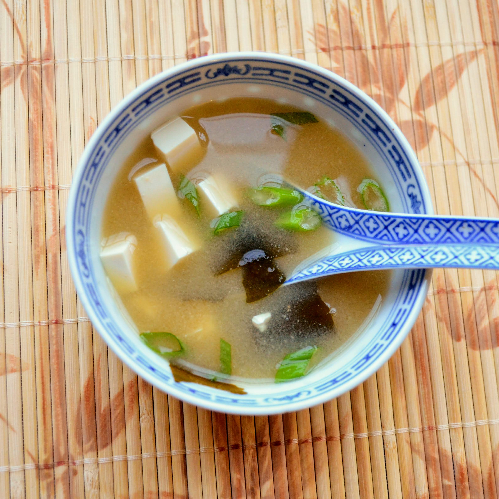

Miso Soup

Description
A refreshing soup from Japan to make your day
Ingredients
- 1 tablespoon finely chopped wakame
- 4 cups water
- 2 teaspoons dashi granules
- 3 tablespoons miso paste
- 4 ounces silken tofu, cubed
- 2 green onions, sliced on the bias
Steps
- Place wakame in a fine-mesh sieve and soak in some cold water for 10 minutes.
- Combine 4 cups water and dashi granules in a saucepan and bring to a boil over medium heat. Add miso paste and whisk to dissolve. Add wakame and simmer for 3 minutes.
- Divide tofu between 4 serving bowls. Ladle miso soup on top and garnish with green onions.